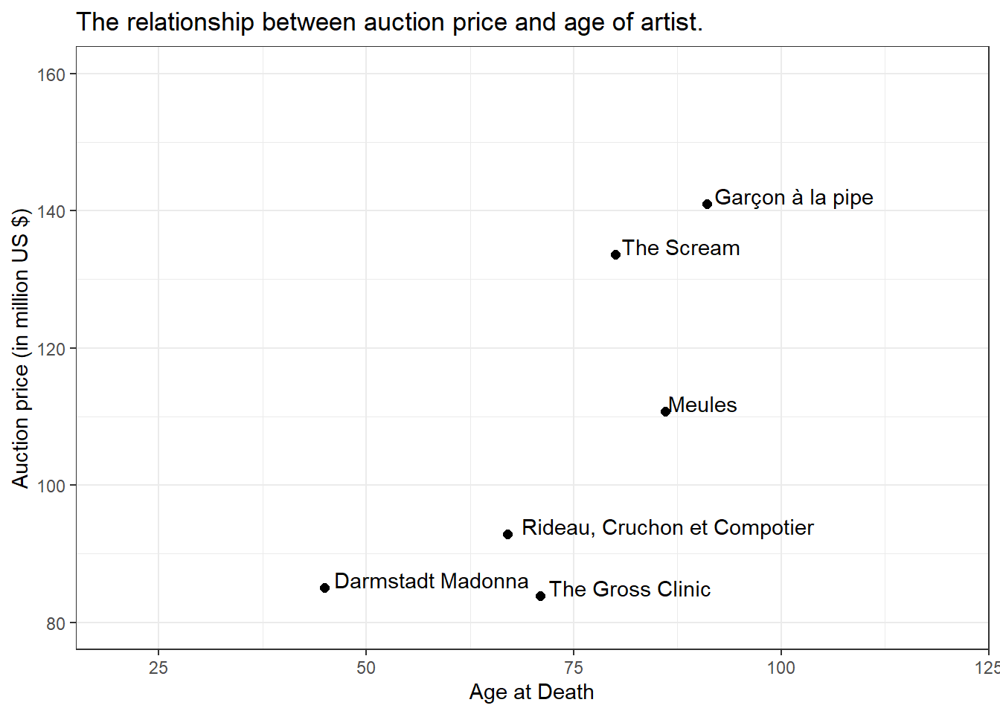
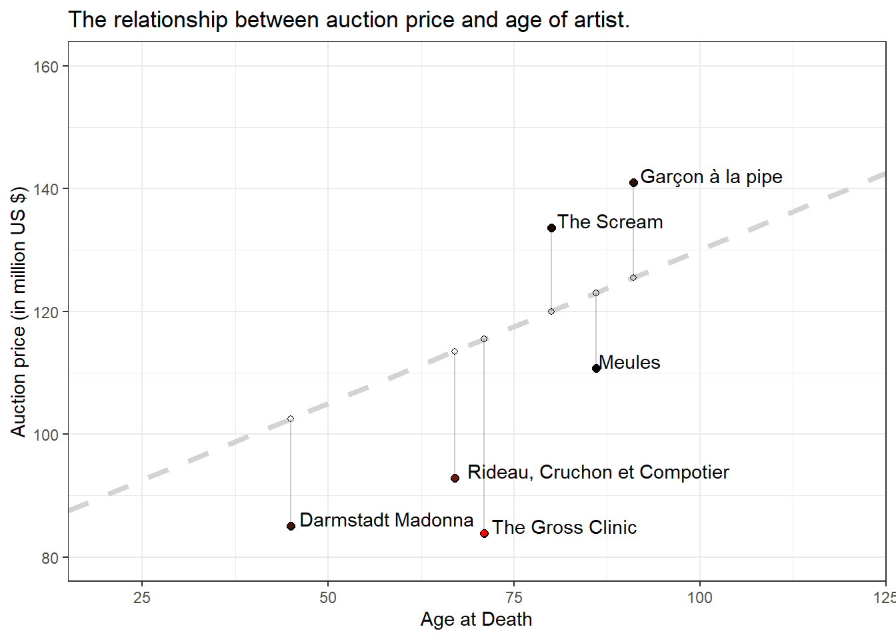

Chapter 4 Slope Fields
4.1 Definition
Slope fields (also called direction fields) are a graphical representation of the solutions to a first-order differential equation of a scalar function. Solutions to a slope field are functions drawn as solid curves. A slope field shows the slope of a differential equation at certain vertical and horizontal intervals on the x-y plane, and can be used to determine the approximate tangent slope at a point on a curve, where the curve is some solution to the differential equation.
4.2 Slope Fields in R
There’s no need to build everything from scratch. The first useful resource I can find is:
https://www.r-bloggers.com/2014/09/generate-slope-fields-in-r-and-python/
Show me the code.
# Our differential equation
diff <- function(x,y)
{
return(x/y) #Try also x+y
}
# Line function
TheLine <- function(x1,y1,slp,d)
{
z = slope*(d-x1)+y1
return(z)
}
# Domains
x = seq(-20,20,0.5)
y = seq(-20,20,0.5)
# Points to draw our graph
f = c(-5,5)
h = c(-5,5)
plot(f,h,main="Slope field")
# Let's generate the slope field
for(j in x)
{
for(k in y)
{
slope = diff(j,k)
domain = seq(j-0.07,j+0.07,0.14)
z = TheLine(j,k,slope,domain)
arrows(domain[1],z[1],domain[2],z[2],length=0.08)
}
}
The post https://stackoverflow.com/questions/47984874/how-to-create-a-slope-field-in-r puts this into a SlopeField function.
Show me the code.
SlopeField = function(FUN,xi = -5,xs = 5,yi = -5,ys = 5, radius = 0.1, grid.by = 0.25){
# FUN - given function ODE i.e:
# xi,xs - lower and upper bound - x - plot
# yi,ys - lower and upper bound - y - plot
# grid points
seqx = seq(xi,xs,grid.by)
seqy = seq(yi,ys,grid.by)
# plot
f = c(xi,xs)
h = c(yi,ys)
plot(f,h,main="Slope field", ylab = "Dependet variable", xlab = "Independet variable", pch = ".")
# arrows
for(x in seqx){
for(y in seqy){
ym = y
xm = x
slope = unlist(FUN(x,y))
if(is.na(slope)){
cor = "black"
} else if(slope > 0){
cor = "blue"
}else if (slope < 0) {
cor = "red"
}else if(slope == 0) {
cor = "green"
}
arrows(radius*cos(atan(slope)+pi)+xm,
radius*sin(atan(slope)+pi)+ym,
radius*cos(atan(slope))+xm,
radius*sin(atan(slope))+ym,
length = 0.2*radius, col= cor)
}
}
}4.3 Technical Example
We can specify an ODE in another function and plot its slope field. The suggested example is
\[y'(t) = y^2 - t \]
ode = function(t, y){
dydt <- y^2-t
list(dydt)
}Let’s draw the slope field.
SlopeField(ode, xi = -2, xs = 5, yi = -2, ys = 2,radius = 0.1, grid.by = 0.25)
That looks good. But can how can we get the ODE solution from this graph?
4.4 Understandable Examples
4.4.1 y’ = y
Even without a background in differential equations, think about the following:
\[y'(x) = y(x)\] We are looking for a function \(y(x)\) that is identical to its first derivative \(y'(x)\). Perhaps you remember such a function from your last math class (analysis). It is the exponential function, that basically does not change by differentiation.
\[y(x) = e^x \Rightarrow y'(x) = e^x \]
ode_1 = function(t, y){
dydt <- y
list(dydt)
}
SlopeField(ode_1, xi = -2, xs = 5, yi = -2, ys = 2,radius = 0.1, grid.by = 0.25)
Can you see something like the exponential function in this slope field?
Show me how an exponential function looks like.
x_value<-runif(100,2,8)
plot(x_value,exp(x_value))Perhaps you can spot something like the \(y(x) = e^x\) in the blue area. But how about the red arrows? Any mirror at the x-axis is also a valid solution to the problem. How do we mirror? Use a factor in front of the e function. This may be negative.
\[y(x) = C \cdot e^x \Rightarrow y'(x) = C \cdot e^x \]
4.4.2 y’ = -y
Let’s give it another try. Which function equals its first derivative (after changing sign).
\[y'(x) = -y(x)\]
It is a sibling of the \(e^x\). The solution is \(y(x) = C \cdot e^{-x}\).
ode_2 = function(t, y){
dydt <- -y
list(dydt)
}
SlopeField(ode_2, xi = -2, xs = 5, yi = -2, ys = 2,radius = 0.1, grid.by = 0.25)
4.4.3 y’ = x^2
Wait, there’s no more y on the RHS. Don’t worry. That’ll make it even easier. What is the integral of \(x^2\)? You may expect
\[y'(x) = x^2 \Rightarrow \int x^2 dx = 1/3 \cdot x^3 + C\] Okay, the general shape is a cubic function. Can you spot a cubic function?
ode_3 = function(t, y){
dydt <- t^2
list(dydt)
}
SlopeField(ode_3, xi = -2, xs = 5, yi = -2, ys = 2,radius = 0.1, grid.by = 0.25)
4.5 Initial value problem
Recap, the prior solution was \(y(x) = 1/3 \cdot x^3 + C\). Due to \(C\) this is a family of curves. If we specify some of them, that’s called the initial value problem. This problem makes is actually even more easy to understand the slope field. Let’s add two particular cubic functions for \(C = 0\) and \(C = 0.5\).
SlopeField(ode_3, xi = -2, xs = 5, yi = -2, ys = 2,radius = 0.1, grid.by = 0.25)
lines(y,1/3*x*x*x,col="red", lwd=2)
lines(y,1/3*x*x*x+0.5,col="orange", lwd=2)
Enjoy. Learn. Share.